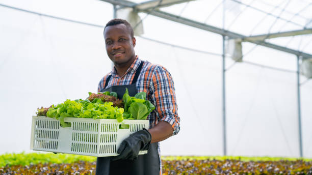
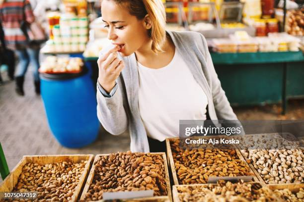

First Sales Attendant
He has an experience of five and a very trusted employee of Karibu gloceries
He is very dedicated and determined in what he doesField days provide a unique space for farmers,
researchers, and agricultural professionals to come together to share insights, learn from one another, and foster future collaborations. Discover a roadmap and customizable materials to plan, host, and follow up on hosting a successful event at
your farm or research site with OFRF’s new Field Day Toolkit.
Second Sales Attendant

With appeciation to Karibu. I am proudly and contented with the services offered at
Karibu.In reguards of all the customers i thank
Karibu for the big heart of huelping people like me in special situations
Third Sales Attendant

The market is currently valued at 23.46 billion USD in 2024.
High numbers indicate that selling agricultural products online for farmers can be highly beneficial.
However, certain factors play an essential role, such as government policies,
the law and order situation in the country, floods or droughts, and sudden demand increases.
It is one of the easiest ways to share agricultural seeds, crops,
and yield with farmers working in the other corner of the world.
By:
MERRY R
Go somewhere Forth Sales Attendant

Farmers can sell bulk quantities of grains, spices, or processed goods
to international buyers. The platform’s advanced tools for product listing, secure payment systems,
and logistics management make it a top marketplace for farmers targeting export markets.
Its extensive buyer network spans multiple industries, providing a reliable channel
for scaling up operations. With Alibaba.com, farmers can compete on a global stage
while ensuring streamlined trade practices.